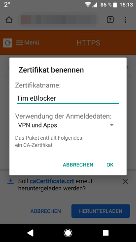

Deutsch | English
Mit nur wenigen Schritten haben Sie das Zertifikat hinterlegt. Benutzen Sie bitte den Google Chrome Browser.
Öffnen Sie die eBlocker HTTPS Konfigurationsseite, oder das eBlocker Dashboard.
Klicken Sie in auf der HTTPS Konfigurationsseite auf den Button HTTPS ASSISTENT STARTEN, oder in dem eBlocker Dashboard in der HTTPS Karte auf den Link HTTPS ASSISTENT STARTEN.
Der Assistent wird Ihnen Schritt für Schritt aufzeigen, wie Sie das eBlocker Zertifikat in Android hinterlegen.
Alternativ können Sie das eBlocker Zertifikat auch ohne den Assistenten hinterlegen.


Bei Android Versionen kleiner als Version 6 reicht es, wenn Sie das Zertifikat nur unter "WLAN" speichern.
Sie finden das eBlocker-Zertifikat im Download-Ordner, sollte es nicht automatisch geöffnet werden.